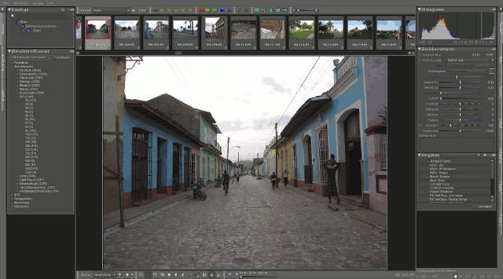

Bibble
Archivierte Anleitung
Dieser Artikel wurde archiviert, da er - oder Teile daraus - nur noch unter einer älteren Ubuntu-Version nutzbar ist. Diese Anleitung wird vom Wiki-Team weder auf Richtigkeit überprüft noch anderweitig gepflegt. Zusätzlich wurde der Artikel für weitere Änderungen gesperrt.
Anmerkung: Ende 2011 wurde der Hersteller BibbleLabs von Corel übernommen  . Das Produkt hat jetzt einen neuen Namen: Corel AfterShot Pro.
. Das Produkt hat jetzt einen neuen Namen: Corel AfterShot Pro.
Zum Verständnis dieses Artikels sind folgende Seiten hilfreich:
Bibble ist ein kommerzielles Programm zur Konvertierung, Nachbearbeitung und Verwaltung digitaler Photos, insbesondere RAW-Dateien, das auch für Linux angeboten wird. Das Programm arbeitet wie alle RAW-Konverter nicht-destruktiv (Änderungen werden separat gespeichert, und die Originaldatei bleibt erhalten) und bietet mit NoiseNinja eine der besten Rauschunterdrückungen.
Das Programm wird in zwei Versionen angeboten. Die Unterschiede zwischen Lite und Pro finden sich in diesem Vergleich  . Als Preise werden derzeit 80 EUR für Bibble Lite und 170 EUR für Bibble Pro genannt, die Händler verkaufen Bibble auf CD für 70 und 140 Euro. (Stand: Dezember 2011). Als freie Alternativen sind die Anwendungen RawTherapee und Darktable zu nennen.
. Als Preise werden derzeit 80 EUR für Bibble Lite und 170 EUR für Bibble Pro genannt, die Händler verkaufen Bibble auf CD für 70 und 140 Euro. (Stand: Dezember 2011). Als freie Alternativen sind die Anwendungen RawTherapee und Darktable zu nennen.
Installation¶
Auf der offiziellen Homepage kann ohne Angabe der E-Mail-Adresse eine 30-Tage-Demoversion des Programms als DEB-Paket heruntergeladen werden, die sich über die Paketverwaltung installieren [1] lässt.
Hinweis!
Fremdpakete können das System gefährden.
Starten lässt sich das Programm über den Menüeintrag "Anwendungen -> Grafik -> Bibble 5". Falls man das Programm erwirbt, kann unter "Hilfe -> Bibble 5 aktivieren" der Lizenzcode eingegeben werden.
Benutzung¶
Nach dem Start von Bibble erscheint ein Fenster, das in folgende drei Bereiche eingeteilt ist:

In der linken Spalte lassen sich Ordner laden, Bilder in den Katalog importieren und Export-Einstellungen festlegen.
In der Mitte werden die aktuell ausgewählten Bilder angezeigt. Die Anzeigeoptionen hierfür sowie eine Bewertung und Kategorisierung der Bilder lassen sich in der oberen Leiste vornehmen. Über die untere Leiste kann man das Bild zuschneiden, drehen, die Ansicht vergrößern und Bearbeitungsebenen erstellen.
In den Tabs auf der rechten Seite finden sich die verschiedenen Parameter zur Bearbeitung und Manipulation der Bilder sowie die Exif-Daten des geladenen Bildes.
Damit man das Programm besser versteht, empfiehlt es sich, die auf der Homepage vorhandenen Videotutorials und das Benutzerhandbuch anzuschauen.
Stapelverarbeitung¶
Um mehrere Dateien auf einmal zu bearbeiten, kann man Bildbearbeitungsschritte als Profile speichern und auf ausgewählte Bilder anwenden. Dazu bearbeitet man ein Bild, speichert das Profil im Reiter "Standard -> Vorgaben -> +" und wendet es danach durch Auswahl in der darunterliegenden Liste auf alle markierten Bilder an. Im linken Reiter Ausgabe kann man Einstellungen bezüglich des Exports, also Dateityp, Größe, Qualität, Name etc. festlegen und mit dem angegebenen Tastaturkürzel die ausgewählten Bilder per Stapelverarbeitung speichern.
Plugins installieren¶
Bibble lässt sich durch Plugins erweitern. Eine aktuelle Liste verfügbarer Erweiterungen findet man auf dieser Seite des Herstellers. Die heruntergeladenen Plugins können unter "Datei -> Plugin installieren" hinzugefügt werden und nach erfolgreicher Installation auf der rechten Seite in dem rechten Tab unter "Plugins" gefunden werden.
Problembehebung¶
Es kann vorkommen, dass bei installierter Jack-Umgebung ein Export von Dateien oder das generelle Starten des Programms nicht möglich ist. Abhilfe schafft, in der Datei /etc/security/limits.conf die Zeilen
@audio - rtprio 100 @audio - nice -10`
mit einer # am Zeilenanfang auszukommentieren und das System neu zu starten. Zu beachten ist, dass die Jack-Umgebung dann höchstwahrscheinlich nicht mehr mit Echtzeitpriorität funktioniert.
 Übersichtsartikel
Übersichtsartikel- Erstellt mit Inyoka
-
 2004 – 2017 ubuntuusers.de • Einige Rechte vorbehalten
2004 – 2017 ubuntuusers.de • Einige Rechte vorbehalten
Lizenz • Kontakt • Datenschutz • Impressum • Serverstatus -
Serverhousing gespendet von